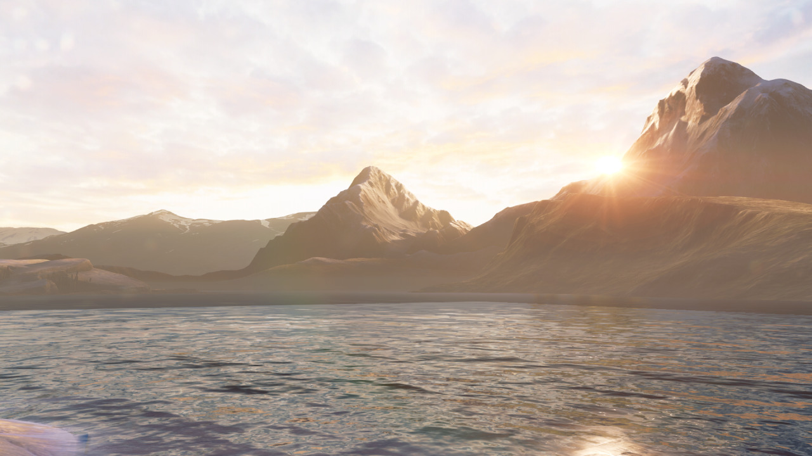
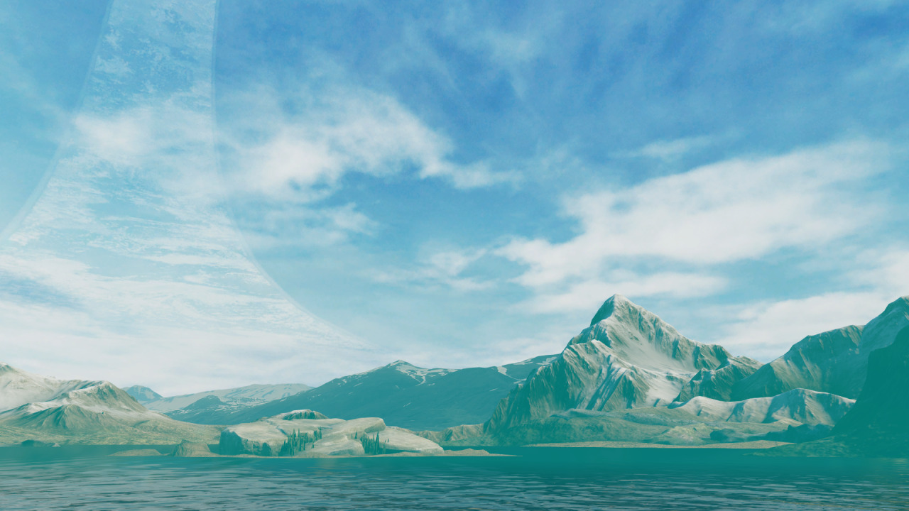
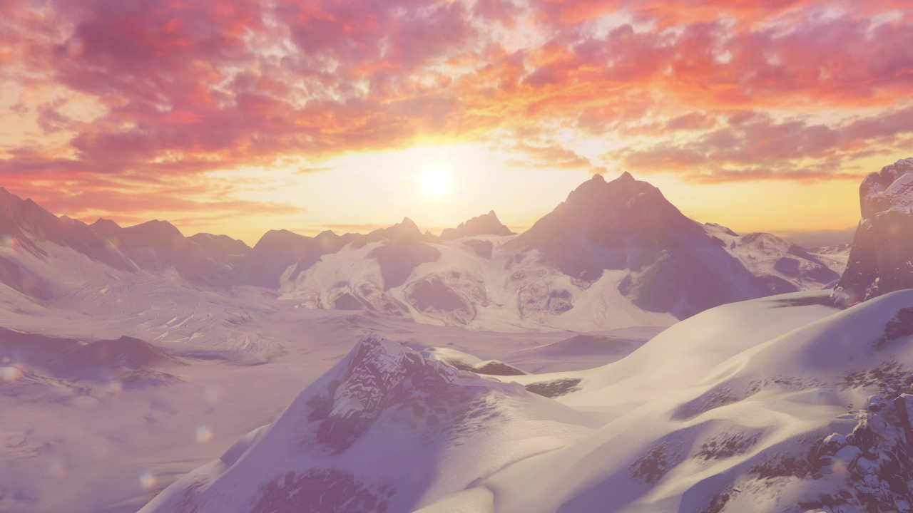
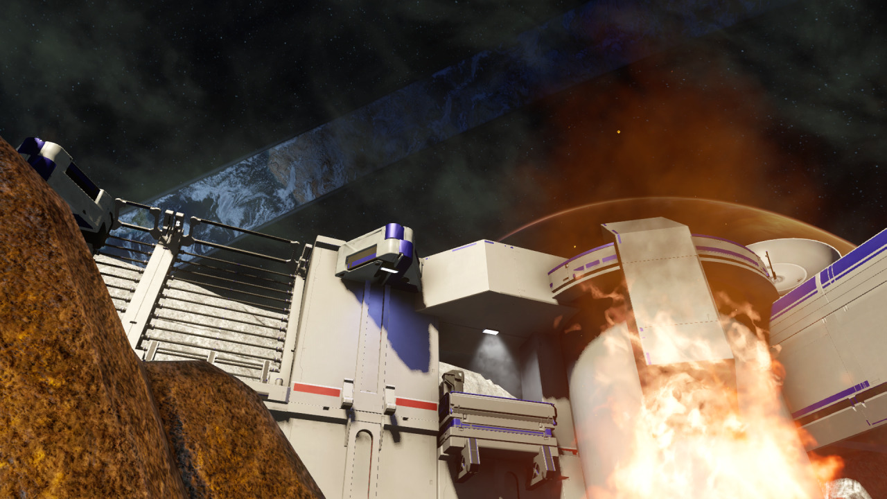

Halo 5 Guardians - Forge Map Enviroments!
Finally we have the forge maps. Now the final screenshot for Parallax will be updated in the future when i actually get the hang of forge and make a map with a different skybox (this forge map is using the same one used for Truth). Anyway, going from top to bottom we have…
- Alpine
- Alpine [Bonus Screenshot]
- Breakout Arena
- Glacier
- Parallax [Placeholder Screenshot]